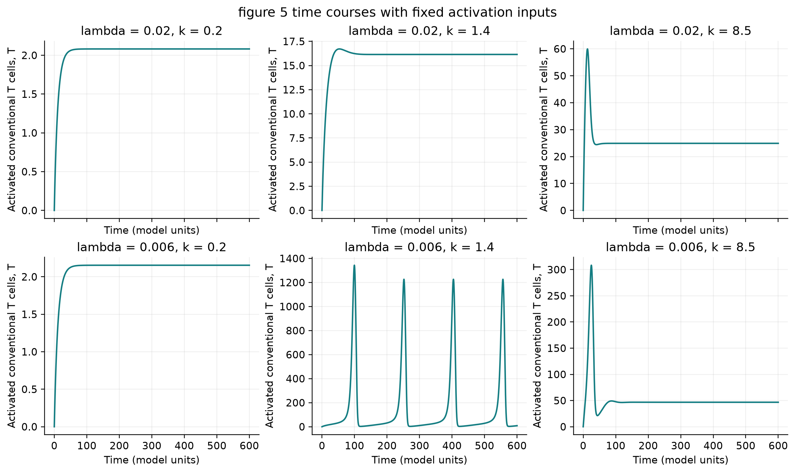
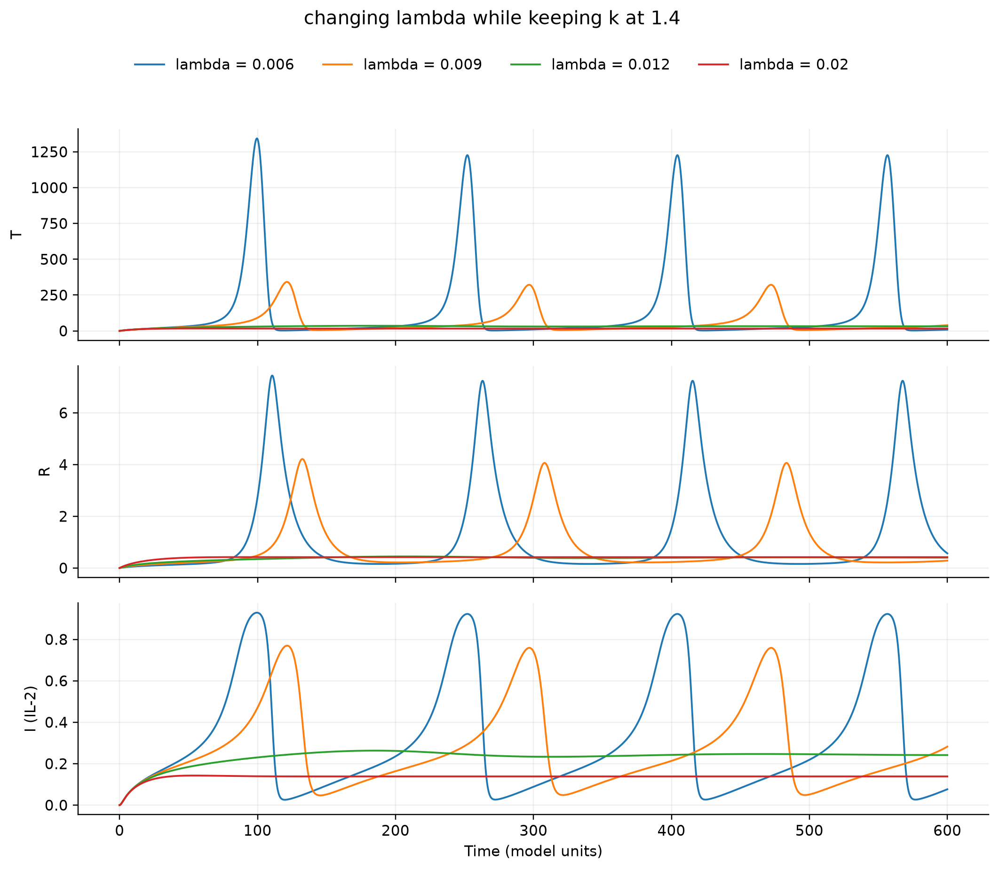
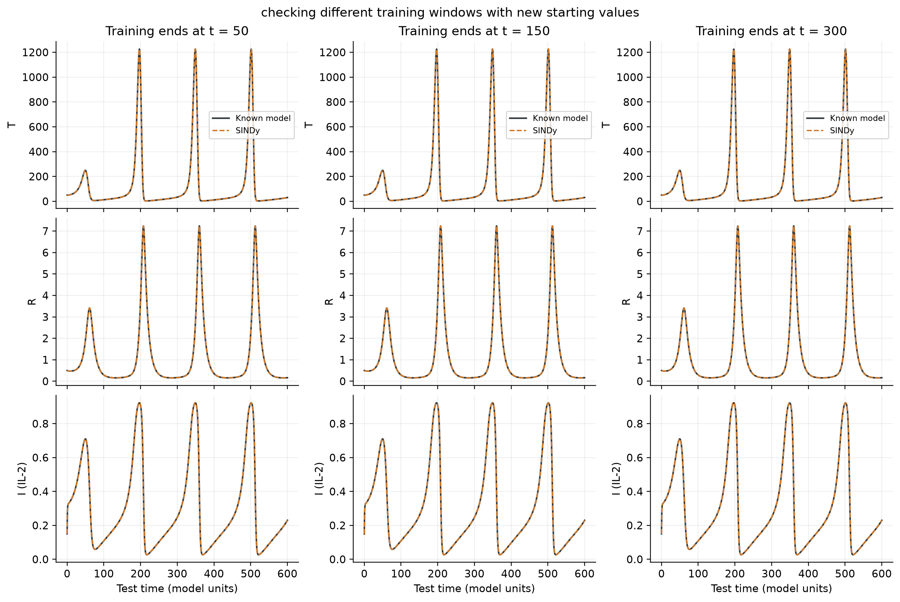

MATH 463 miniproject
T-cell, Treg, and
IL-2 dynamics
This project uses a three-state ordinary differential equation model to study immune-cell dynamics, test parameter changes, and learn equations from simulated data with SINDy.
Authors: Gabriel Cirker, Kennedy Jamison, & Cecilia Pirozzi
A constant-input interpretation of Khailaie et al. (2013). It omits the two resting cell pools and does not reproduce the full five-state model or bifurcation diagram. Results use simulated data and are not clinical predictions.
01 / Model and methods
Model, experiments, and code
The model tracks activated conventional T cells, regulatory T cells, and IL-2. Experiments vary the activation inputs and use separate training, validation, and test trajectories for SINDy.
Code & notebook
Model equations, simulations, and SINDy implementation.
Methods & project notes
Setup, equations, assumptions, and saved results.
Data & fitted models
Saved trajectories, coefficients, and evaluation metrics.
Paper comparison
Comparison with the paper’s printed Figure 5B baseline trace.
Reproducibility
Dependencies and the settings used for the included run.
Run the project locally Python 3.10 or newer
Download or clone the repository, then run these commands from its folder.
python -m pip install -r requirements.txt
python immune_miniproject.py --check-only
python immune_miniproject.pyUse python3 if needed. Outputs are saved in results/; use --output-dir results_new to keep the included run.
02 / Results
Simulation and SINDy results
The figures compare activation-input settings, the effect of λ, and SINDy training lengths. Results use clean simulated data from the three-state model.


T-cell time courses across activation inputs
Six fixed-input settings corresponding to the paper’s Figure 5 insets.


Effect of λ on immune-cell dynamics
Increasing λ reduced peak T-cell values in these four cases, with k fixed at 1.4.


SINDy fits across training windows
Training windows of 50, 150, and 300 time units each recovered the model’s 12 nonzero coefficients.
03 / Final report
Final project report
Modeling Immune Activation & Self-Tolerance: T-cell, Treg, and IL-2 Dynamics.